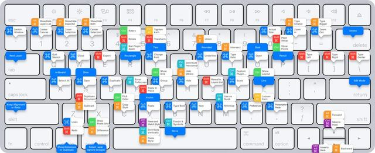

<!DOCTYPE html><html><head><meta charset="utf-8"><title>什么样的行为出卖了你是一个程序员 | 技术学派</title><meta name="viewport" content="width=device-width,initial-scale=1,maximum-scale=1"><meta name="keywords" content="IT培训, Python, 大数据, 人工智能, Web前端, PHP, python"><meta name="description" content="0. 在正常交流中掺杂编程规范和语法每个编程语言都有自己特定的语法，程序员在日常开发中都要遵守这些规范。这些编程习惯可能会影响到程序员的日常文档书写习惯，比如写东西时会用分号来结束一行内容等。1. 在写文档时，标序号总是从0开始（0、1、2、3 …）程序语言中数组下标都是从0开始，所以使得程序员在日常生活中数数都是从0开始。2. 真实生活中习惯操作快捷键程序员在工作中是习惯使用快捷键，能使用键盘操"><meta name="keywords" content="python"><meta property="og:type" content="article"><meta property="og:title" content="什么样的行为出卖了你是一个程序员"><meta property="og:url" content="http://www.JiShuXuePai.com/blog/学习答疑/学习答疑/什么样的行为出卖了你是一个程序员/index.html"><meta property="og:site_name" content="技术学派"><meta property="og:description" content="0. 在正常交流中掺杂编程规范和语法每个编程语言都有自己特定的语法，程序员在日常开发中都要遵守这些规范。这些编程习惯可能会影响到程序员的日常文档书写习惯，比如写东西时会用分号来结束一行内容等。1. 在写文档时，标序号总是从0开始（0、1、2、3 …）程序语言中数组下标都是从0开始，所以使得程序员在日常生活中数数都是从0开始。2. 真实生活中习惯操作快捷键程序员在工作中是习惯使用快捷键，能使用键盘操"><meta property="og:locale" content="zh-CN"><meta property="og:image" content="http://www.jishuxuepai.com/blog/学习答疑/学习答疑/什么样的行为出卖了你是一个程序员/01.jpg"><meta property="og:updated_time" content="2018-06-14T01:52:29.000Z"><meta name="twitter:card" content="summary"><meta name="twitter:title" content="什么样的行为出卖了你是一个程序员"><meta name="twitter:description" content="0. 在正常交流中掺杂编程规范和语法每个编程语言都有自己特定的语法，程序员在日常开发中都要遵守这些规范。这些编程习惯可能会影响到程序员的日常文档书写习惯，比如写东西时会用分号来结束一行内容等。1. 在写文档时，标序号总是从0开始（0、1、2、3 …）程序语言中数组下标都是从0开始，所以使得程序员在日常生活中数数都是从0开始。2. 真实生活中习惯操作快捷键程序员在工作中是习惯使用快捷键，能使用键盘操"><meta name="twitter:image" content="http://www.jishuxuepai.com/blog/学习答疑/学习答疑/什么样的行为出卖了你是一个程序员/01.jpg"><link rel="stylesheet" href="/libs/bootstrap/bootstrap-grid.css"><link rel="stylesheet" href="/libs/font-awesome/css/font-awesome.min.css"><link rel="stylesheet" href="/libs/titillium-web/styles.css"><link rel="stylesheet" href="/libs/source-code-pro/styles.css"><link rel="stylesheet" href="/css/style.css"><script src="/libs/jquery/jquery.min.js"></script><link rel="stylesheet" href="/libs/lightgallery/css/lightgallery.min.css"><link rel="stylesheet" href="/libs/justified-gallery/justifiedGallery.min.css"><script>var _hmt=_hmt||[];!function(){var e=document.createElement("script");e.src="//hm.baidu.com/hm.js?4c1bd812de3c30edbaa2b803c66f0a04";var t=document.getElementsByTagName("script")[0];t.parentNode.insertBefore(e,t)}()</script></head></html><body><div id="wrap"><header id="header"><div id="header-outer" class="outer"><div class="container"><div class="container-inner"><div id="header-title"><h1 class="logo-wrap"><a href="/" class="logo"></a></h1></div><div id="header-inner" class="nav-container"><a id="main-nav-toggle" class="nav-icon fa fa-bars">菜单</a><div class="nav-container-inner"><ul id="main-nav"><li class="main-nav-list-item"><a class="main-nav-list-link" href="/">主页</a></li><li class="main-nav-list-item"><a class="main-nav-list-link" href="/edu/index.html">学编程</a></li><li class="main-nav-list-item"><a class="main-nav-list-link" href="/blog/">博客</a></li><li class="main-nav-list-item"><a class="main-nav-list-link" href="/tips.html">学习建议</a></li><li class="main-nav-list-item"><a class="main-nav-list-link" href="/about.html">关于</a></li></ul><nav id="sub-nav"><div id="search-form-wrap"><form class="search-form"><input type="text" class="ins-search-input search-form-input" placeholder="搜索"> <button type="submit" class="search-form-submit"></button></form><div class="ins-search"><div class="ins-search-mask"></div><div class="ins-search-container"><div class="ins-input-wrapper"><input type="text" class="ins-search-input" placeholder="想要查找什么..."> <span class="ins-close ins-selectable"><i class="fa fa-times-circle"></i></span></div><div class="ins-section-wrapper"><div class="ins-section-container"></div></div></div></div><script>window.INSIGHT_CONFIG={TRANSLATION:{POSTS:"文章",PAGES:"页面",CATEGORIES:"分类",TAGS:"标签",UNTITLED:"(未命名)"},ROOT_URL:"/",CONTENT_URL:"/content.json"}</script><script src="/js/insight.js"></script></div></nav></div></div></div></div></div></header><div class="container"><div class="main-body container-inner"><div class="main-body-inner"><section id="main"><div class="main-body-header"><h1 class="header"><a class="page-title-link" href="/categories/学习答疑/">学习答疑</a><div class="author"></div></h1></div><div class="main-body-content"><article id="post-学习答疑/什么样的行为出卖了你是一个程序员" class="article article-single article-type-post" itemscope itemprop="blogPost"><div class="article-inner"><header class="article-header"><h1 class="article-title" itemprop="name">什么样的行为出卖了你是一个程序员</h1></header><div class="article-meta"><div class="article-date"><a href="/blog/学习答疑/学习答疑/什么样的行为出卖了你是一个程序员/" class="article-date"><time datetime="2018-06-12T09:23:38.000Z" itemprop="datePublished">2018-06-12</time></a></div><div class="article-tag"><i class="fa fa-tag"></i> <a class="tag-link" href="/tags/python/">python</a></div></div><div class="article-entry" itemprop="articleBody"><h3 id="0-在正常交流中掺杂编程规范和语法"><a href="#0-在正常交流中掺杂编程规范和语法" class="headerlink" title="0. 在正常交流中掺杂编程规范和语法"></a>0. 在正常交流中掺杂编程规范和语法</h3><p>每个编程语言都有自己特定的语法，程序员在日常开发中都要遵守这些规范。这些编程习惯可能会影响到程序员的日常文档书写习惯，比如写东西时会用分号来结束一行内容等。</p><h3 id="1-在写文档时，标序号总是从0开始（0、1、2、3-…）"><a href="#1-在写文档时，标序号总是从0开始（0、1、2、3-…）" class="headerlink" title="1. 在写文档时，标序号总是从0开始（0、1、2、3 …）"></a>1. 在写文档时，标序号总是从0开始（0、1、2、3 …）</h3><p>程序语言中数组下标都是从0开始，所以使得程序员在日常生活中数数都是从0开始。</p><h3 id="2-真实生活中习惯操作快捷键"><a href="#2-真实生活中习惯操作快捷键" class="headerlink" title="2. 真实生活中习惯操作快捷键"></a>2. 真实生活中习惯操作快捷键</h3><p>程序员在工作中是习惯使用快捷键，能使用键盘操作的绝对不使用鼠标，如 Cmd-C 表示复制、Cmd-V 表示粘贴。然而这些快捷键有时在程序员的行为和话语中表现的很常见，却在一些场合引起尴尬。</p><p></p><h3 id="3-害羞而闷骚"><a href="#3-害羞而闷骚" class="headerlink" title="3. 害羞而闷骚"></a>3. 害羞而闷骚</h3><p>网上聊天猛如虎，现实见面却怂如。。。</p><p>大多数的程序员在网上聊天时状态很嗨，但一见面就害羞脸红不敢说话。总的来说是，闲的时候骚而不闷，忙的时候只闷不骚。</p><p></p><h3 id="4-试图优化任何事情"><a href="#4-试图优化任何事情" class="headerlink" title="4. 试图优化任何事情"></a>4. 试图优化任何事情</h3><p>软件开发者会不断优化自己的代码，让它越来越快、越来越高效。</p><p>而在现实生活中，程序员也习惯会尝试优化真实生活中的事情，尽量省力、高效，往往会被认为太懒惰，比如脏衣服经常要堆到一定规模才去清洗。</p><h3 id="5-生活方式不健康"><a href="#5-生活方式不健康" class="headerlink" title="5. 生活方式不健康"></a>5. 生活方式不健康</h3><p>程序员写起程序来有时一坐就是大半天，眼镜不离电脑屏幕，甚至在灵感爆发时熬夜。以致作息无规律，锻炼不足，与外界接触过少。</p><p></p><h3 id="6-希望人们都和电脑一样循规蹈矩"><a href="#6-希望人们都和电脑一样循规蹈矩" class="headerlink" title="6. 希望人们都和电脑一样循规蹈矩"></a>6. 希望人们都和电脑一样循规蹈矩</h3><p>计算机会按照程序设定的方式运行，运行出错就是程序出现Bug了。</p><p>程序员有时会忽略人们是和电脑不一样的，人不可能完全按照逻辑和理性来做事，更多的是“跟着感觉走”。</p><p></p><h3 id="7-价值千金的电子产品"><a href="#7-价值千金的电子产品" class="headerlink" title="7. 价值千金的电子产品"></a>7. 价值千金的电子产品</h3><p>你们懂程序员的电脑、耳机、键盘都是什么牌子的吗？程序员不是不炫富，而是炫富的方式跟我们的不一样罢了，不然我们来查查程序员的电脑、键盘、耳机等价格。</p><p></p><h3 id="8-太过于强迫症、完美主义"><a href="#8-太过于强迫症、完美主义" class="headerlink" title="8. 太过于强迫症、完美主义"></a>8. 太过于强迫症、完美主义</h3><p>程序中一般不能使用模糊的语义，因为计算机要求很精确。程序中即使有一点小错误，也会导致程序编译不过、运行不起来。</p><p>程序员日常生活中容易过于认真，不放过任何小细节，“打破沙锅问到底”，这有时会给周围的人造成压力。</p><p></p><h3 id="9-总想到2的幂次方"><a href="#9-总想到2的幂次方" class="headerlink" title="9. 总想到2的幂次方"></a>9. 总想到2的幂次方</h3><p>计算机都是以二进制存储信息的，基本单位是bit。这导致程序员常常不以10进制而是2进制进行计算。</p><h3 id="10-收藏夹中有-LeetCode"><a href="#10-收藏夹中有-LeetCode" class="headerlink" title="10. 收藏夹中有 LeetCode"></a>10. 收藏夹中有 LeetCode</h3><p>除了逛 Github、CSDN、知乎、今日头条外，就是打开 LeetCode 练习刷题，保养脑细胞，夜生活不玩狼人杀和同事、朋友、同学组团刷！</p><h3 id="11-习惯按Ctrl-S"><a href="#11-习惯按Ctrl-S" class="headerlink" title="11.习惯按Ctrl+S"></a>11.习惯按Ctrl+S</h3><p>有时候看网页看着看着就Ctrl+S一下，之后突然反应过来不对。</p><h3 id="12-注释"><a href="#12-注释" class="headerlink" title="12.注释"></a>12.注释</h3><p>重要地方必须要有注释，注释内容必须要清楚明了。</p></div><footer class="article-footer"><a data-url="http://www.JiShuXuePai.com/blog/学习答疑/学习答疑/什么样的行为出卖了你是一个程序员/" data-id="cjidw4tzq0001zgfyso9b83kt" class="article-share-link"><i class="fa fa-share"></i>分享到</a><script>!function(n){n("body").on("click",function(){n(".article-share-box.on").removeClass("on")}).on("click",".article-share-link",function(t){t.stopPropagation();var e,a=n(this),o=a.attr("data-url"),r=encodeURIComponent(o),i="article-share-box-"+a.attr("data-id"),s=a.offset();if(n("#"+i).length){if((e=n("#"+i)).hasClass("on"))return void e.removeClass("on")}else{var l=['<div id="'+i+'" class="article-share-box">','<input class="article-share-input" value="'+o+'">','<div class="article-share-links">','<a href="https://twitter.com/intent/tweet?url='+r+'" class="article-share-twitter" target="_blank" title="Twitter"></a>','<a href="https://www.facebook.com/sharer.php?u='+r+'" class="article-share-facebook" target="_blank" title="Facebook"></a>','<a href="http://pinterest.com/pin/create/button/?url='+r+'" class="article-share-pinterest" target="_blank" title="Pinterest"></a>','<a href="https://plus.google.com/share?url='+r+'" class="article-share-google" target="_blank" title="Google+"></a>',"</div>","</div>"].join("");e=n(l),n("body").append(e)}n(".article-share-box.on").hide(),e.css({top:s.top+25,left:s.left}).addClass("on")}).on("click",".article-share-box",function(t){t.stopPropagation()}).on("click",".article-share-box-input",function(){n(this).select()}).on("click",".article-share-box-link",function(t){t.preventDefault(),t.stopPropagation(),window.open(this.href,"article-share-box-window-"+Date.now(),"width=500,height=450")})}(jQuery)</script></footer></div></article><section id="comments"><div id="gitalk_frame"></div></section></div></section><aside id="sidebar"><a class="sidebar-toggle" title="Expand Sidebar"><i class="toggle icon"></i></a><div class="sidebar-top"><p>关注我 :</p><ul class="social-links"><li><a class="social-tooltip" title="火星时代" href="http://edu.hxsd.com/edunew/topics/webfull/index.html" target="_blank"><i class="icon fa fa-dribbble"></i></a></li><li><a class="social-tooltip" title="weibo" href="#" target="_blank"><i class="icon fa fa-weibo"></i></a></li><li><a class="social-tooltip" title="rss" href="/atom.xml" target="_blank"><i class="icon fa fa-rss"></i></a></li></ul></div><nav id="article-nav"><a href="/blog/学习答疑/学习答疑/如何有效的学习Web前端开发？/" id="article-nav-newer" class="article-nav-link-wrap"><strong class="article-nav-caption">下一篇</strong><p class="article-nav-title">如何有效的学习Web前端开发？</p><i class="icon fa fa-chevron-right" id="icon-chevron-right"></i> </a><a href="/blog/学习答疑/学习答疑/Python相比Java，谁更胜一筹呢？/" id="article-nav-older" class="article-nav-link-wrap"><strong class="article-nav-caption">上一篇</strong><p class="article-nav-title">Python相比Java，谁更胜一筹呢？</p><i class="icon fa fa-chevron-left" id="icon-chevron-left"></i></a></nav><div class="widgets-container"><div class="widget-wrap widget-list"><h3 class="widget-title">分类</h3><div class="widget"><ul class="category-list"><li class="category-list-item"><a class="category-list-link" href="/categories/animate/">animate</a><span class="category-list-count">17</span></li><li class="category-list-item"><a class="category-list-link" href="/categories/git/">git</a><span class="category-list-count">1</span></li><li class="category-list-item"><a class="category-list-link" href="/categories/html/">html</a><span class="category-list-count">2</span></li><li class="category-list-item"><a class="category-list-link" href="/categories/js/">js</a><span class="category-list-count">5</span></li><li class="category-list-item"><a class="category-list-link" href="/categories/php/">php</a><span class="category-list-count">3</span></li><li class="category-list-item"><a class="category-list-link" href="/categories/vue/">vue</a><span class="category-list-count">1</span></li><li class="category-list-item"><a class="category-list-link" href="/categories/学习答疑/">学习答疑</a><span class="category-list-count">35</span></li><li class="category-list-item"><a class="category-list-link" href="/categories/插件资源库/">插件资源库</a><span class="category-list-count">4</span></li></ul></div></div><link rel="stylesheet" href="/css/tech/toc.css"><div class="widget-wrap widget-list widget-toc"><h3 class="widget-title">目录</h3><div class="widget"><div class="toc"></div><link rel="stylesheet" href="https://cdnjs.cloudflare.com/ajax/libs/tocbot/3.0.5/tocbot.css"><script src="https://cdnjs.cloudflare.com/ajax/libs/tocbot/3.0.5/tocbot.min.js"></script><script>$(function(){$(".main-body-content").find("h1,h2,h3").each(function(t){$(this).attr("id")||$(this).attr("id","list"+t)}),tocbot.init({tocSelector:".toc",contentSelector:".main-body-content",headingSelector:"h1, h2, h3",collapseDepth:2,positionFixedSelector:".widget-toc",fixedSidebarOffset:595,includeHtml:!1})})</script></div></div><div class="widget-wrap widget-list"><h3 class="widget-title">标签</h3><div class="widget"><ul class="tag-list"><li class="tag-list-item"><a class="tag-list-link" href="/tags/C/">C</a><span class="tag-list-count">1</span></li><li class="tag-list-item"><a class="tag-list-link" href="/tags/go/">go</a><span class="tag-list-count">1</span></li><li class="tag-list-item"><a class="tag-list-link" href="/tags/php/">php</a><span class="tag-list-count">1</span></li><li class="tag-list-item"><a class="tag-list-link" href="/tags/python/">python</a><span class="tag-list-count">17</span></li><li class="tag-list-item"><a class="tag-list-link" href="/tags/web前端/">web前端</a><span class="tag-list-count">2</span></li></ul></div></div><div class="widget-wrap widget-float"><h3 class="widget-title">标签云</h3><div class="widget tagcloud"><a href="/tags/C/" style="font-size:10px">C</a> <a href="/tags/go/" style="font-size:10px">go</a> <a href="/tags/php/" style="font-size:10px">php</a> <a href="/tags/python/" style="font-size:20px">python</a> <a href="/tags/web前端/" style="font-size:15px">web前端</a></div></div><div class="widget-wrap widget-list"><h3 class="widget-title">链接</h3><div class="widget"><ul><li><a href="http://edu.hxsd.com/edunew/topics/webfull/index.html">火星时代</a></li></ul></div></div></div></aside><script>$(function(){$(window).scroll(function(){240<=$(document).scrollTop()?($("#sidebar .sidebar-toggle").addClass("fix"),"block"==$("#sidebar .sidebar-toggle").css("display")&&$(".is-position-fixed").css("top","35px")):$("#sidebar .sidebar-toggle").removeClass("fix")})})</script></div></div></div><footer id="footer"><div class="top"><div class="inner"><div class="list"><div class="left clearfix"><dl><dt>关于我们</dt><dd><a href="/about.html" target="_blank">公司简介</a></dd><dd><a href="edu/index.html" target="_blank">联系我们</a></dd></dl><dl><dt>校区攻略</dt><dd><a href="edu/index.html" target="_blank">校区环境</a></dd><dd><a href="edu/index.html" target="_blank">住宿攻略</a></dd><dd><a href="edu/index.html" target="_blank">来校路线</a></dd></dl><dl><dt>课程培训</dt><dd><a href="edu/python.html" target="_blank">Python</a></dd><dd><a href="edu/python.html" target="_blank">Web前端</a></dd><dd><a href="edu/python.html" target="_blank">PHP</a></dd><dd><a href="edu/python.html" target="_blank">人工智能</a></dd><dd><a href="edu/python.html" target="_blank">大数据</a></dd></dl><dl><dt>常见问答</dt><dd><a href="edu/index.html" target="_blank">学费学时</a></dd><dd><a href="edu/index.html" target="_blank">学习方法</a></dd></dl></div></div><div class="tel"><tel>176-0025-8815</tel><span>北京市海淀区杏石口路81号火星时代大厦</span></div><div class="weixin"><div class="w1"> <span>头条号</span></div><div class="w1"> <span>官方微信</span></div></div></div></div><div class="bot">Copyright 2018 技术学派 京ICP备15015508号-3</div></footer><link rel="stylesheet" href="https://unpkg.com/gitalk/dist/gitalk.css"><script src="https://unpkg.com/gitalk/dist/gitalk.min.js"></script><script>var gitalk=new Gitalk({clientID:"2fbbb9980b49019d99a7",clientSecret:"152dd10e83ef6595761ea2185304f9ac8263573f",repo:"jsxp",owner:"li-kang",admin:["li-kang"]});gitalk.render("gitalk_frame")</script><script src="/libs/lightgallery/js/lightgallery.min.js"></script><script src="/libs/lightgallery/js/lg-thumbnail.min.js"></script><script src="/libs/lightgallery/js/lg-pager.min.js"></script><script src="/libs/lightgallery/js/lg-autoplay.min.js"></script><script src="/libs/lightgallery/js/lg-fullscreen.min.js"></script><script src="/libs/lightgallery/js/lg-zoom.min.js"></script><script src="/libs/lightgallery/js/lg-hash.min.js"></script><script src="/libs/lightgallery/js/lg-share.min.js"></script><script src="/libs/lightgallery/js/lg-video.min.js"></script><script src="/libs/justified-gallery/jquery.justifiedGallery.min.js"></script><script src="/js/main.js"></script></div></body>